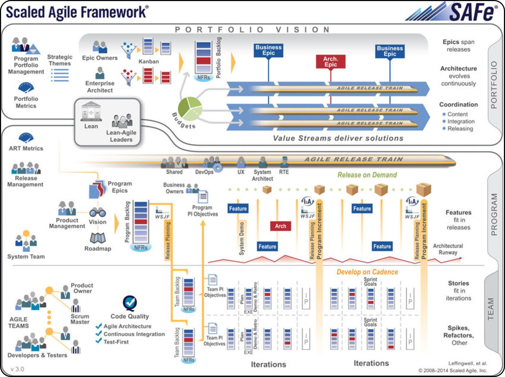
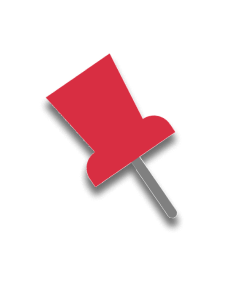
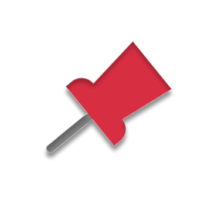

Seu Criador sendo:
KENT BECK
Seu Criador sendo:
DEAN LEFFINGWELL
O SAFe foi criado em 2011, pelo consultor e autor Dean Leffingwell,
que tinha experiência em liderar grandes projetos de software em
empresas como Rational Software, IBM e BMC Software. Ele percebeu que
os métodos ágeis tradicionais, como o XP, não eram suficientes para
escalar os benefícios da agilidade para organizações de grande porte,
com múltiplas equipes e níveis de hierárquicos.
O XP é um método ágil que foi criado em 1996, por Kent Beck, quando
ele trabalhava em um projeto da Chrysler chamado C3. Beck aplicou os
princípios do Manifesto Ágil, que ele havia co-autorado em 2001, e
definiu 12 práticas que caracterizam o XP, como programação em
pares, refatoração, integração contínua e feedback constante,
flexível e adaptável a mudanças.
Modelo:

As praticas do XP envolvem: Cliente Presente, Planejamento,
Programação em Pares, Pequenas Versões, Testes Constantes,
Refatoração, Padronização de Código, e Projeto Simples.
As praticas do XP necessitam de presença contínua e ativa do
cliente, desenvolvedores trabalhando em duplas para ter códigos
melhorados e revisados, e eficácia na prototipação com pequenas
versões.
As práticas do SAFe envolvem: Incremento de programa, Plano de
Release, Scrum de Scrum, inspecionar e Adaptar, Demonstração de
incrementos, Liderança de Lean-Agile, Gerencia de portifólios,
Refinamento de Backlogs, DevOps, Quadro de planejamento, e Workshop de
adaptabilidade e avanços.
Entre suas práticas SAFe e XP possuem algumas práticas em comuns
como desenvolvimento orientado a teste, integração entrega e
melhorias contínuas.
Também possuem suas práticas individuais e requerimentos
específicos.
Sendo requisitos específicos do SAFe um maior investimento em
treinamento, planejamento e alinhamento estratégico. Porém tais
requisitos trazem benefícios com os times de ação rápida.
Já o XP requer maior envolvimento do cliente e comprometimento dos
desenvolvedores que traz uma maior qualidade e produtividade e
satisfação dos envolvidos.
O escopo do XP é flexível e adaptável às mudanças de requisitos e
prioridades do cliente. O projeto é dividido em pequenas
funcionalidades chamadas de história de usuário, que são estimadas,
priorizadas e implementaddas em clicos curtos, chamados de iterações.
A cada iteração, o cliente recebe uma versão funcional e testada do
software, e pode dar feedback e solicitar alterações.
O escopo do SAFe é alinhado e sincronizado entre os diferentes níveis
da organização, que são: time, programa, portfólio e valor. Cada nível
tem seu próprio backlog, que contém os itens de trabalho que devem ser
entregues. O escopo do do SAFe é definido de forma estratégica, com
base na visão na missão, nos objetivos e nos valores da organização. O
escopo da SAFe é revisado e ajustado periodicamente, de acordo com os
resultados obtidos e as mudanças do mercado.
A principal diferença entre os escopos de XP e SAFe é suas
escalas.
SAFe é uma metodologia que teve seu escopo planejado para um
desenvolvimento em grande escala com múltiplos times e de forma
contínua já XP é uma metodologia focada em projetos de pequeno a
médio porte com um desenvolvimento em meio a requisitos volateis.
Os métodos ágeis de Extreme Programming (XP) e Scaled Agile
Framework (SAFe) são duas abordagens diferentes para o
desenvolvimento de software que seguem os princípios do Manifesto
Ágil.
> O XP é mais focado na qualidade do código e na colaboração
entre os desenvolvidores e o cliente, enquanto o SAFe é mais
voltado para a escala e o alinhamento estratégico das
organizações.
> O XP é mais simples e flexível, mas pode ser difícil de
aplicar em grandes projetos.
> O SAFe é mais complexo e estruturado, mas pode perder a
agilidade e a adaptabilidade.
EXTREME PROGRAMMING
Scaled Agile Framework
O XP enfatiza a qualidade do código, a colaboração entre os
desenvolvedores e o envolvimento do cliente. Ele se baseia em 12
práticas, como a programação em pares, testes automatizados,
refatoração, integração contínua e feedback constante. O XP é adequado
para projetos pequenos e médios, com requisitos voláteis e equipes
co-localizadas.
O SAFe visa escalar os princípios ágeis e enxutos para organizações de
grande porte, com multiplas equipes e níveis hierárquicos. Ele se
baseia em quatro níveis: time, programa, portfólio e valor. O SAFe
promove o alinhamento estratégico, a entrega ccontínua de valor, a
colaboração entre as partes interessadas e a melhoria contínua.
Os 5 princípios que norteiam o XP são Comunicação, Feedback,
Simplicidade, Mudanças Incrementais e Trabalho de Alta
Qualidade.
A comunicação e feedback, são essenciais para facilitar e
permitir a troca de ideias, tanto com a equipe quanto com o
cliente. Simplicidade nos códigos. Mudanças para que permita
ajustes durante o desenvolvimento. E qualidade para realizar um
trabalho que gere valor.
Os 8 princípios fundamentais do SAFe são: Visão Econômica,
Pensamento Sistêmico, Variabilidade, Incrementar com Ciclos
Rápidos e Integrados, Marcos de Avaliação, Fluxo Contínuo,
Sincronização, e Motivação.
Para empresas grandes que dependem de equipes engajadas, o uso
do SAFe depende desses princípios para a entrega de projetos de
qualidade e rapidez.
Os Princípios de SAFe e de XP se cruzam em diversos casos.
Desenvolvimento incremental, cooperação entre equipe e cliente,
entregas rápidas e de qualidade, flexibilidade de escopo do
projeto, criação de valor progressiva e de acordo.
Porém seus focos podem diferir como por exemplo SAFe tem como
principal foco de seus princípios em promover o alinhamento das
equipes e adaptação às mudanças do mercado e das necessidades de
seus clientes.
Já XP tem como foco de seus princípios a qualidade de códigos e
satisfação do cliente com técnicas de engenharia de software
como o uso de testes automatizados e programação em pares e
integração contínua.


Referências